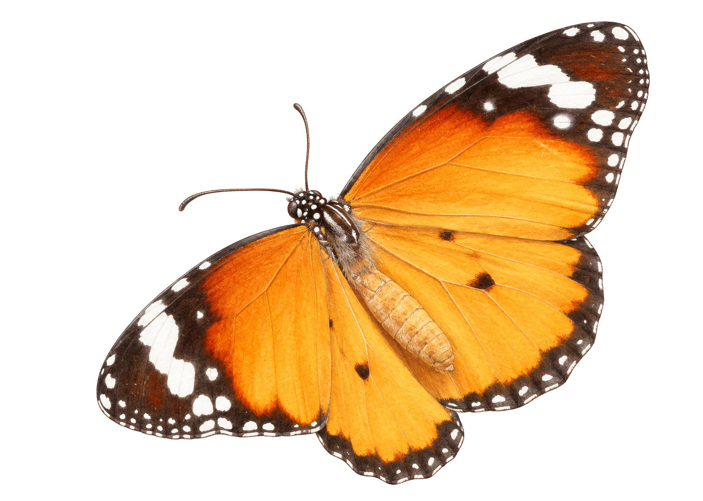

Nymphalidae · 118 / 165
Danaus chrysippus
Danaus chrysippus

বৈশিষ্ট্য ও শনাক্তকরণ
কমলাটে-বাদামি ডানা, কালো ডগায় সাদা দাগ; পেছনের ডানার কালো শিরা তুলনামূলক কম স্পষ্ট।
স্ত্রী ও পুরুষের পার্থক্য
পুরুষের পেছনের ডানার নিচের কালো দাগের মধ্যে সাদা যৌনচিহ্ন দেখা যায়।
আকার
ডানা মেলা অবস্থায় বিস্তার 70–80 মিমি। ভারতের G.B. Pant গবেষণা প্রতিষ্ঠানের নির্দেশিকা-র মান; ওকিনাওয়ার নমুনার মাপ নয়। অঞ্চল, উপপ্রজাতি ও সূত্রভেদে পার্থক্য থাকে।
ওকিনাওয়ার দ্বীপে রেকর্ড
রেকর্ডকৃত দ্বীপের উদাহরণ: ওকিনাওয়া মূল দ্বীপ, ইশিগাকি, ইরিওমোতে, ইয়োনাগুনি, তাকেতোমি, কোহামা, কুরোশিমা, হাতেরুমা, মিয়াকো, কুমে, ইহেয়া, ইজেনা, ইয়ে, কোউরি, সেসোকো, ইয়াগাজি, তোকাশিকি, জামামি, আকা, মিনামি দাইতো, কিতা দাইতো, ইরাবু, শিমোজি, কুরিমা, তারামা, হাতোমা, ইউবু, কুদাকা, হামাহিগা, ৎসুকেন, আগুনি, তোনাকি। এটি সব রেকর্ডস্থানের পূর্ণ তালিকা নয়।
আবাসস্থল
রৌদ্রোজ্জ্বল তৃণভূমি, ক্ষেত, পার্ক ও বাগান।
জীবনযাপন ও অতিরিক্ত তথ্য
প্রদেশে রেকর্ড বা প্রজননের তথ্য আছে; প্রতিটি দ্বীপে বর্তমান প্রাচুর্য বা প্রতিবছরের উপস্থিতির নিশ্চয়তা নয়।
শূককীট ও খাদ্য উদ্ভিদ
Asclepias ও Gomphocarpus-জাতীয় মিল্কউইড; বিকল্প পালন-খাদ্যকে বন্য খাদ্যের সঙ্গে মেলাবেন না।
তথ্যসূত্র ও সহায়ক পাঠ
- 日本の蝶：形態・雌雄差
ডেটায় উল্লেখিত সূত্র দেখার তারিখ: 2026-11-10 - 沖縄蝶類生態図鑑：カバマダラ
ডেটায় উল্লেখিত সূত্র দেখার তারিখ: 2026-11-10 - 大きさの追加出典：インドG.B. Pant研究所の図鑑
ডেটায় উল্লেখিত সূত্র দেখার তারিখ: 2026-11-10
তথ্য সরবরাহকৃত ডেটার উপর ভিত্তি করে তৈরি (হালনাগাদ: ১০ নভেম্বর ২০২৬)। কোনো দ্বীপের রেকর্ড সেখানে বর্তমান স্থায়ী বসবাস বা সহজে দেখা পাওয়ার নিশ্চয়তা নয়। চিত্র নির্দেশক; শনাক্তকরণে বাস্তব নমুনা ও সূত্র মিলিয়ে দেখুন।